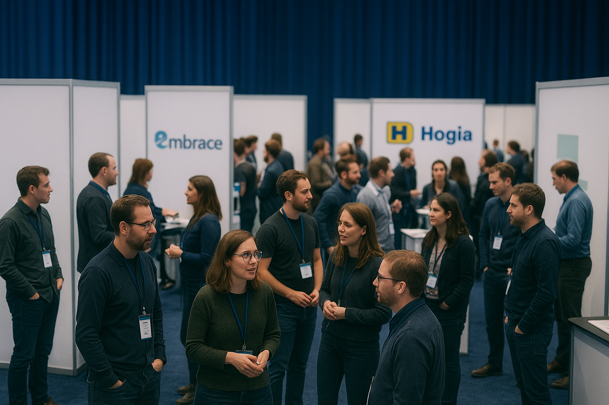
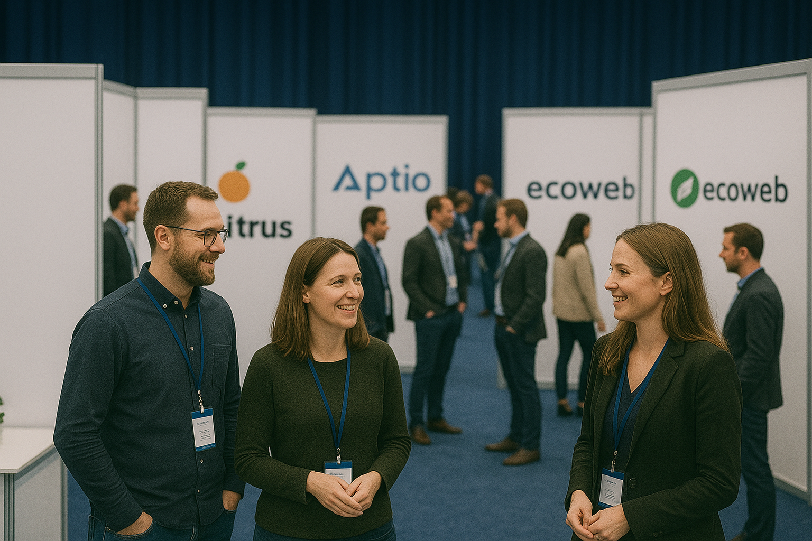

Bättre webb är konferensen för dig som vill ligga i framkant inom frontend och webbutveckling. Under en heldag samlar vi branschens mest erfarna utvecklare, designers och experter för att dela med sig av sina insikter, verktyg och bästa tips.


Våra Seminarium
Från CSS till CSS-in-JS: framtidens stilhantering
Utforska hur utvecklare kan välja mellan traditionell CSS, moderna ramverk som Tailwind och dynamiska lösningar som CSS-in-JS - och hur valen påverkar prestanda, teamarbete och skalbarhet.
Designsystem i praktiken: skapa en enhetlig användarupplevelse
Lär dig hur man bygger och underhåller ett designsystem som fungerar i större organisationer - från komponentbibliotek till dokumentation och samarbete mellan designers och utvecklare. skalbarhet.
Tillgänglighet utan kompromisser
En genomgång av hur du kan bygga webbar som är tillgängliga för alla, inklusive användare med funktionsvariationer. Fokus på WCAG-standarder, praktiska exempel och vanliga fallgropar.
Framtidens JavaScript: ESNext och bortom
En djupdykning i de senaste funktionerna i JavaScript och en blick framåt på vad som kommer i nästa specifikationer - och hur dessa påverkar modern frontendutveckling.
Webbprestanda på riktigt: från Lighthouse till Core Web Vitals
Hur mäter man webbprestanda på rätt sätt och hur optimerar man för både användarupplevelse och SEO? Lär dig använda verktyg och best practices för snabba, responsiva sajter.
Figma till kod: effektivare design-handoff
Ett seminarium om hur man kan minimera glappet mellan design och utveckling, med fokus på moderna verktyg och arbetsflöden.
Interaktivitet med Web Components
Lär dig hur Web Components kan användas för att bygga återanvändbara UI-komponenter som fungerar oberoende av ramverk.
Animationsmagi med CSS och JavaScript
Tekniker för att skapa engagerande animationer som förbättrar användarupplevelsen utan att kompromissa med prestanda.
Framtiden för frontend-ramverk: React, Vue, Svelte och beyond
En jämförelse av de mest populära ramverken och en diskussion om vart trenden pekar. Hur väljer man rätt verktyg för rätt projekt?
Hållbar kod: att skriva frontend som håller över tid
Tips och strategier för att skriva läsbar, testbar och underhållbar kod i stora frontendprojekt - så att teamet slipper teknisk skuld längre fram.
Kalender
Fredag 17/10 - Tema: Teknik & verktyg
- 09:30 - 10:30 - Från CSS till CSS-in-JS: framtidens stilhantering
- 11:00 - 12:00 - Framtidens JavaScript: ESNext och bortom/li>
- 15:00 - 16:00 - Från Figma till kod: effektivare design-handoff
Lördag 18/10 - Tema: Design & användarupplevelse
- 09:00 - 10:00 - Designsystem i praktiken: skapa en enhetlig användarupplevelse
- 10:30 - 11:30 - Tillgänglighet utan kompromisser
- 13:00 - 14:00 - Interaktivitet med Web Components
- 14:30 - 15:30 - Animationsmagi med CSS och JavaScript
Söndag 19/10 - Tema: Framtid & hållbarhet
- 09:30 - 10:30 - Framtiden för frontend-ramverk: React, Vue, Svelte och beyond
- 11:00 - 12:00 - Hållbar kod: att skriva frontend som håller över tid